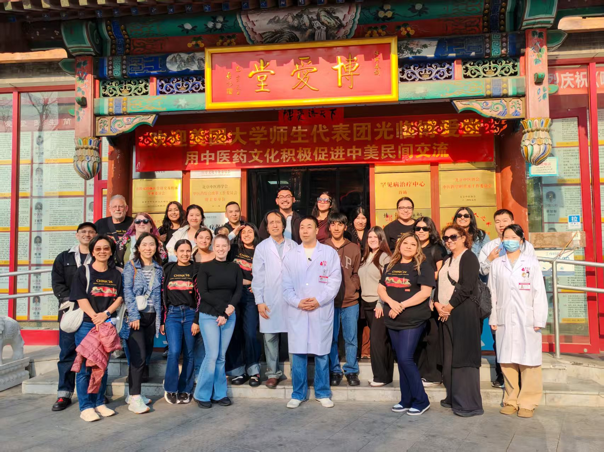
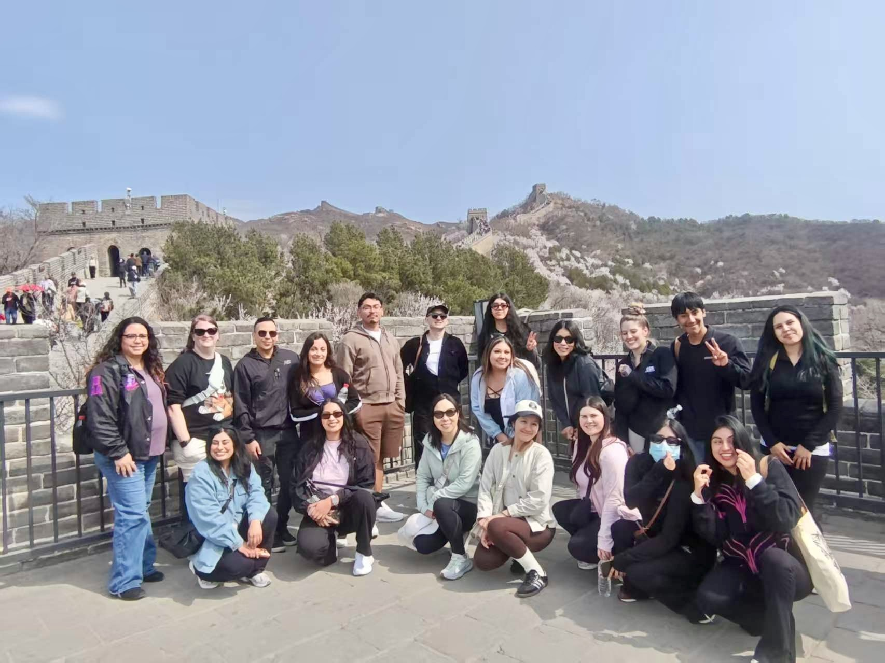
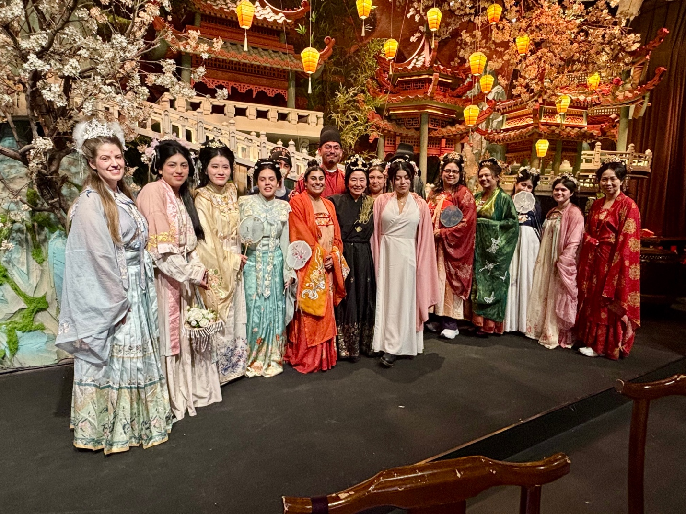
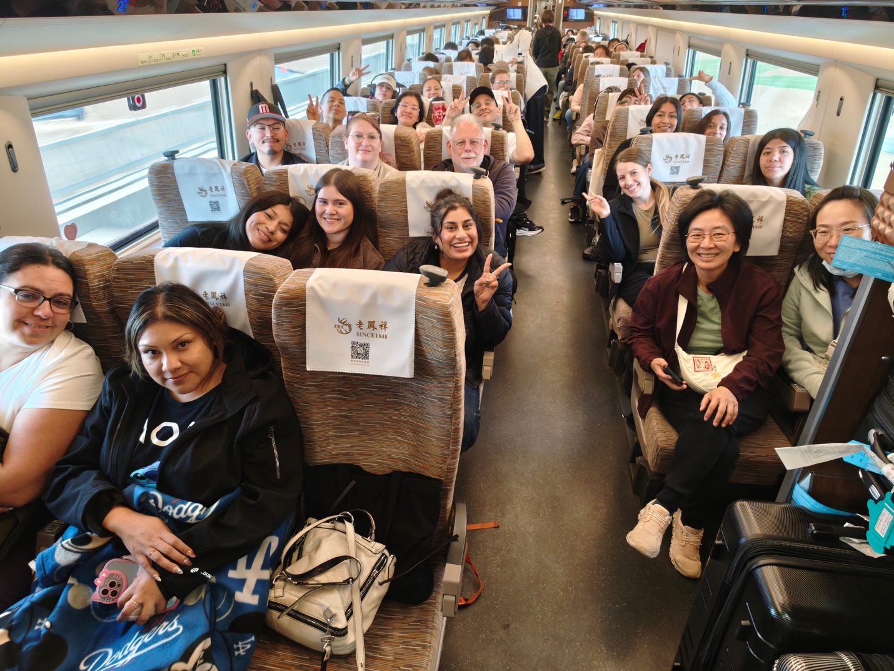

Travel Dates: Offered every Spring Break.

Students visited Boai Chinese Medicine Clinic where they had hands-on exposure to practices such as cupping, acupuncture and moxibustion.

Students at the Great Wall of China, one of the world’s most iconic ancient engineering marvels, reflecting on the ingenuity and endurance it represents across centuries.
Students gather in front of the Forbidden City’s most iconic palace, a UNESCO World Heritage Site, engaging with centuries of history, architecture and cultural legacy at the heart of imperial China.

Students dressed in Tang Dynasty attire step into history, experiencing the elegance, cultural richness and aesthetic traditions of one of China’s most celebrated eras.

Students ride China’s high-speed rail at speeds up to 347 km/h, experiencing cutting-edge engineering and the convenience of ordering snacks and meals delivered directly to their seats.
“This trip changed my perspective on both the world and my career. In the U.S., care can often feel less centered on the individual... In China, I saw a more holistic perspective—one that emphasizes overall well-being and recognizes how factors like diet, family, culture and lifestyle are interconnected.”